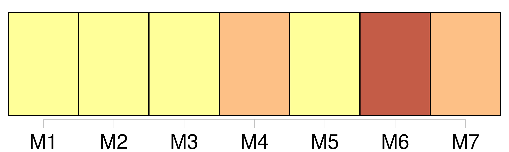
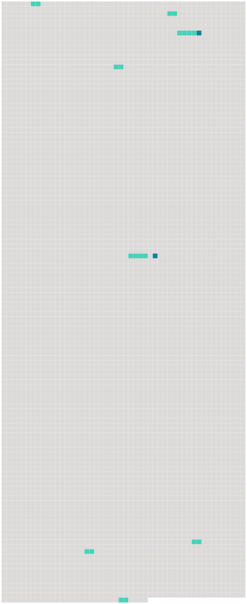

Longueur nb maillons : 10 mentions |
 |
Un prie-Dieu était disposé à côté [du lit] ; une flamme bleuâtre voltigeant sur une patère de bronze jetait par toute la chambre un jour faible et douteux, et çà et là faisait papilloter dans l’ ombre quelque arête saillante de meuble ou de corniche. [1 phrases] Je m’ agenouillai sans oser jeter les yeux sur [le lit] , et je me mis à réciter les psaumes avec une grande ferveur, remerciant Dieu qu’ il eût mis la tombe entre l’ idée de cette femme et moi, pour que je pusse ajouter à mes prières son nom désormais sanctifié. [7 phrases] Dans ce mouvement, mes yeux tombèrent sur [le lit de parade] [qu’] ils avaient jusqu’ alors évité. [11 phrases] » Je me rapprochai [du lit] et je regardai avec un redoublement d’ attention l’ objet de mon incertitude. [65 phrases] Elle avait pour tout vêtement le suaire de lin qui la recouvrait sur [son lit de parade] , [dont] elle retenait les plis sur sa poitrine, comme honteuse d’ être si peu vêtue, mais sa petite main n’ y suffisait pas ; elle était si blanche, que la couleur de la draperie se confondait avec celle des chairs sous le pâle rayon de la lampe. [121 phrases] Un matin, j’ étais assis auprès de [son lit] , et je déjeunais sur une petite table pour ne la pas quitter d’ une minute. [3 phrases] Elle sauta à bas [du lit] avec une agilité animale, une agilité de singe ou de chat, et se précipita sur ma blessure qu’ elle se mit à sucer avec un air d’ indicible volupté. [14 phrases] Je n’ attendis pas longtemps ; Clarimonde entra en robe de nuit et, s’ étant débarrassée de ses voiles, s’ allongea dans [le lit] auprès de moi. |
 |
Il est possible de télécharger la ressource sur la page Ortolang |
Si vous avez des questions ou vous voyez des erreurs, merci d'envoyer un mail à silvia.federzoni89@gmail.com |